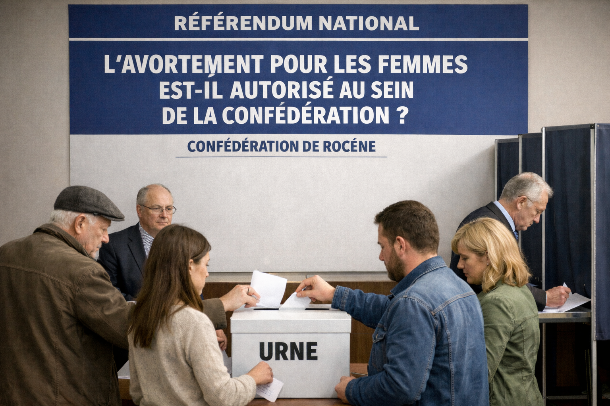

Bienvenue sur le portail officiel de la Confédération de Rocène
La Confédération de Rocène est une nation fondée sur la démocratie directe. Chaque citoyen participe aux décisions politiques et contribue à construire l’avenir du pays.
Accès rapide
Lois
Consulter les lois et décisions votées par le peuple.
Institutions
Découvrir l'organisation politique de la Confédération.
Diplomatie
Relations internationales et alliances de Rocène.
Hymne national
Découvrez l'hymne national de Rocène.
Communes
Consulter l'entièreté des communes de la Confédération.
Documents d'identité
Papier d'identité nécessaire pour vivre dans la Confédération.
Démographie
Statistiques et évolution de la population.
Archives
L’histoire et la fondation de la nation.
Militaires
Organisation de la défense nationale.
Actualités nationales

L’avortement autorisé uniquement si la vie de la femme est en danger
Suite au vote du peuple, l’avortement est désormais autorisé uniquement dans les situations où la vie de la femme enceinte est menacée.
La région d’Anvers officiellement rattachée à la Confédération de Rocène aprés un discour du représentant national.
Suite à la volonté des citoyens locaux, la région d’Anvers est désormais officiellement rattachée à la Confédération de Rocène.